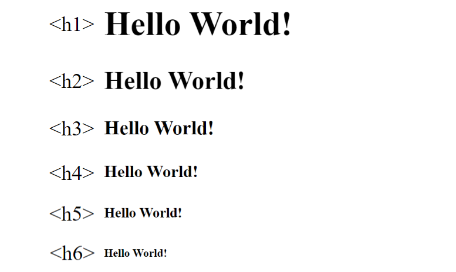

Whether you are a novice, hoping to explore the world of web design or an experienced webmaster seeking to improve your skills, Ayla is the perfect online site tailored to your web design needs. Ayla's step-by-step guide can help you learn and improve your skills in just a few hours.
All contents here will focus on giving you the practical skills to build your site. By the end of this tutorial you will have the know-how to create a basic website and we hope that this will inspire you to explore further into the world of HTML.
Let's start building your first or improve your Website!
Hyper Text Markup Language, or better known as HTML, is a markup language for creating Web pages. It consists of a series of elements that tell the browser how to display the content
HTML was first created by Tim Berners-Lee, Robert Cailliau, and others starting in 1989.Hypertext means that the document contains links that allow the reader to jump to other places in the document or to another document altogether. The latest version is known as HTML5.A Markup Language is a way that computers speak to each other to control how text is processed and presented. To do this HTML uses two things: tags and attributes.
Tags are used to mark up the start of an HTML element and they are usually enclosed in angle brackets.An example of a tag is: <h1>. Most tags must be opened <h1> and closed </h1> in order to function.
Attributes contain additional pieces of information and take the form of an opening tag and additional info is placed inside.
An example of an attribute is:
<img src="First_Picture.png" alt="First Picture Together.">
In this instance, the image source (src) and the alt text (alt) are attributes of the <img> tag.
Golden Rules To Remember
- The vast majority of tags must be opened (<tag>) and closed (</tag>) with the element information such as a title or text resting between the tags.
- When using multiple tags, the tags must be closed in the order in which they were opened. For example:
<strong><em>This is really important!</em></strong>
<!DOCTYPE html> — This tag specifies the language you will write on the page. In this case, the language is HTML 5.
<html> — This tag signals that from here on we are going to write in HTML code.
<head> — This is where all the metadata for the page goes — stuff mostly meant for search engines and other computer programs.
<title> — This is where we insert the page name as it will appear at the top of the browser window or tab.
<meta> — This is where information about the document is stored: character encoding, name (page context), description.
<body> — This is where the content of the page goes.
<!DOCTYPE html>
<html>
<head>
<title> </title>
<meta>
</head>
<body>
</body>
</html>
The HTML <body> is where we add the content which is designed for viewing by human eyes. This includes text, images, tables, forms and everything else that we see on the internet each day.
Lets try it out!

Adding text to our HTML page is simple using an element opened with the tag <p> which creates a new paragraph. We place all of our regular text inside the element <p>. When we write text in HTML, we also have a number of other elements we can use to control the text or make it appear in a certain way.
| Element | Meaning | Purpose |
|---|---|---|
| <b> | Bold | Highlight important information |
| <strong> | Strong | Similarly to bold, to highlight key text |
| <i> | Italic | To denote text |
| <em> | Emphasised Text | Usually used as image captions |
| <mark> | Marked Text | Highlight the background of the text |
| <small> | Small Text | To shrink the text |
| <strike> | Striked Out Text | To place a horizontal line across the text |
| <u> | Underlined Text | Used for links or text highlights |
| <ins> | Inserted Text | Displayed with an underline to show an inserted text |
| <sub> | Subscript Text | Typographical stylistic choice |
| <sup> | Superscript Text | Another typographical presentation style |
The Anchor Tag
The <a> (or anchor) opening tag is written in the format:
<a href="http://www.google.com">Google</a>
The first part of the attribute points to the page that will open once the link is clicked.Meanwhile, the second part of the attribute contains the text which will be displayed to a visitor in order to entice them to click on that link. If you are building your own website then you will most likely host all of your pages on professional web hosting.
You can check the file type of an image by right-clicking the item and selecting ‘Properties’. You can also define borders and other styles around the image using the class attribute. However, we shall cover this in a later tutorial. The file types generally used for image files online are: .jpg, .png, and (less and less) .gif. Alt text is important to ensure that your site is ranked correctly on search sites and also for visually impaired visitors to your site.
The <img> tag normally is written as follows:
The <a> (or anchor) opening tag is written in the format:
<img src="yourimage.jpg" alt="Describe the image" height="X" width="X">
Ordered List
The first is an <ol>. This is an ordered list of contents. Inside the <ol> tag we list each item on the list inside <li> </li> tags.
<ol>
<li>First item </li>
<li>Second item </li>
</ol>
The output will look like this:
1.First item
2.Second item
Unordered List
The second type of list that you may wish to include is an <ul> unordered list. This is better known as a bullet point list and contains no numbers.
<ul>
<li>First item </li>
<li>Second item </li>
</ul>
The output will look like this:
•First item
•Second item
When drawing a table we must open an element with the <table> opening tag. Inside this tag, we structure the table using the table rows, <tr>, and cells, <td>.
An example of an HTML table is as follows:
<table>
<tr>
<td>Row 1 - Column 1</td>
<td>Row 1 - Colunm 2</td>
<td>Row 1 - Column 3</td>
</tr>
<tr>
<td>Row 2 - Column 1</td>
<td>Row 2 - Column 2</td>
<td>Row 2 - Column 3</td>
</tr>
</table>
The output will look like this:
| Row 1 - Column 1 | Row 1 - Colunm 2 | Row 1 - Column 3 |
| Row 2 - Column 1 | Row 2 - Column 2 | Row 2 - Column 3 |
The final step we need to complete is to close the <body> and <html> tags at the end of each page using the following HTML code:
</body>
</html>
We suggest that you further enhance your skills by experimenting with the code you’ve learned using different variables.The power to create your own website is now in your hands.
For more information regarding HTML, visit W3schools - HTML